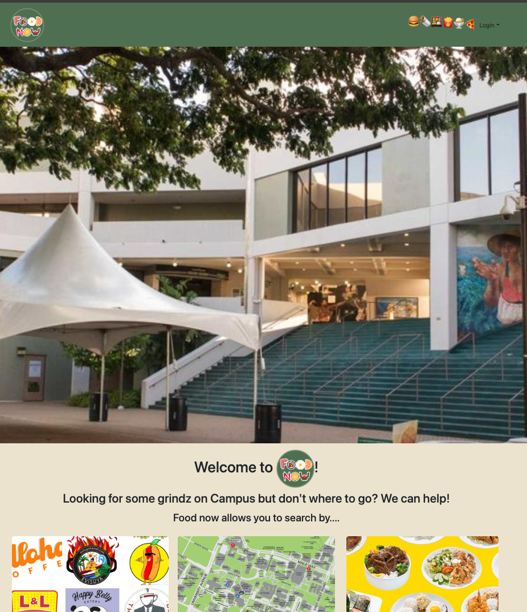
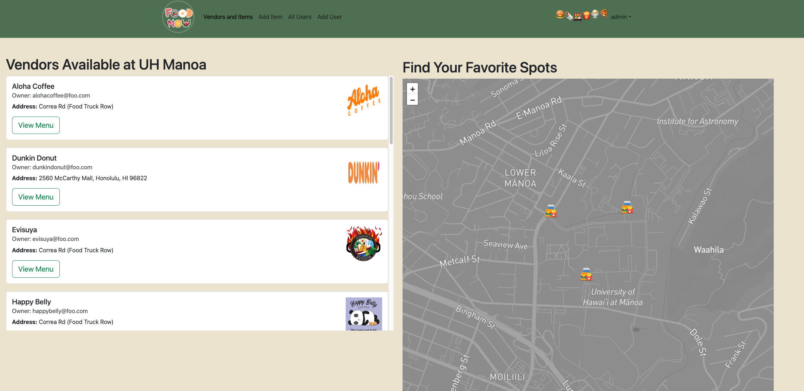
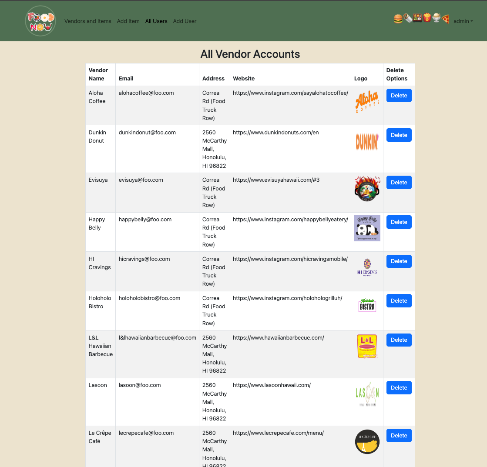
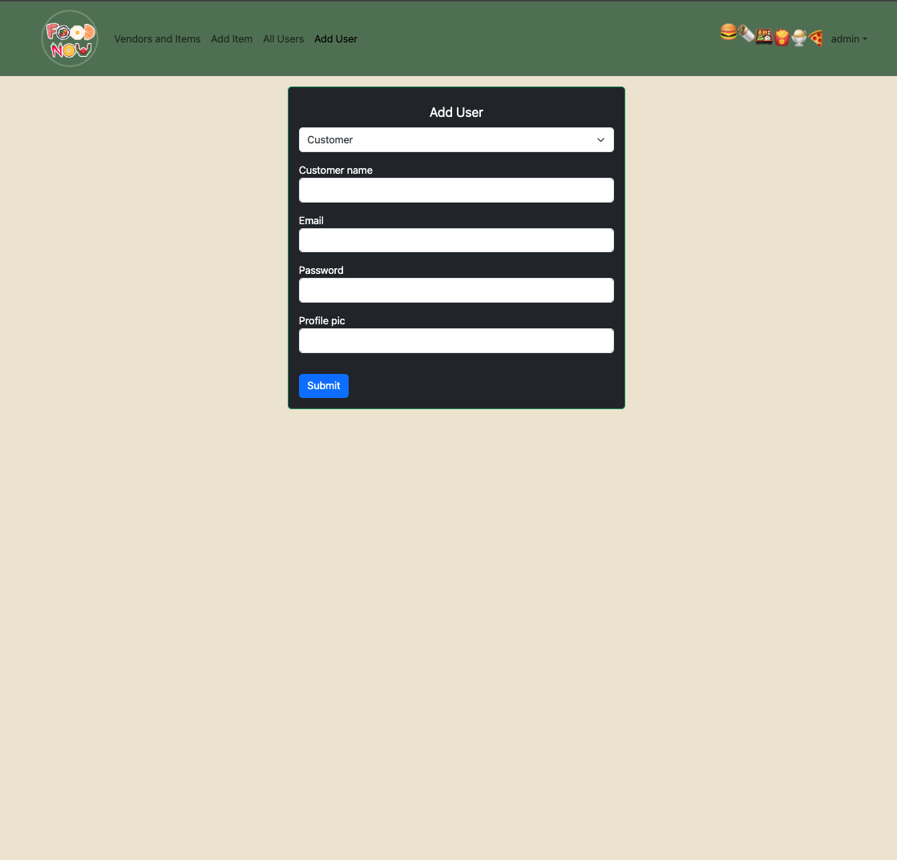

During the FALL 2023 semester at the University of Hawaii, I had the opportunity to take the class “Software Engineering I.” A final group project was required of all students in this class. As one can imagine, it was a little daunting, requiring the consolidation of all the learned material from the semester and collaborating with classmates to develop a working web application. I initially underestimated the task, thinking it would be easy to come together and divide the work. However, it turned out to be far from that, with numerous setbacks, including team members not working, code overwrites, and various coding errors. Today, I would like to showcase the work we accomplished and the project we built.

My team and I were tasked with building a web application that could effectively display food vendors and their menus located at the University of Hawaii’s Manoa campus. Our goal was to provide students with a comprehensive view of all the food options available on campus, making it easy for them to discover new vendors and favorite foods in one central location. We began by creating a central landing page where users could explore the webpage’s offerings and decide to sign up or log in. Subsequently, we implemented an area for different account types to be added to the database, including “Vendors,” “Customers,” and “Admins.” A central view for admins to manage all the different accounts was then added. Finally, we created an “Add Menu Items” page and a central view for customers (students) to display vendors. The end result was a functional application showcasing food options. Although we considered adding a review system or a favorite foods section with more time, the development process presented unexpected challenges.
Throughout the development process, I took responsibility for three key features that significantly contributed to the end product. Firstly, I developed the backend for the “Add User” page, incorporating form data validation and database user creation. Once the team established a working method to add new users, the need arose to view all users centrally for application administrators. I addressed this by creating a simple page displaying three tables, one for each account type, showing essential information such as name, profile picture, and email. Lastly, I assisted in creating the central view that customers (students) see after logging in. This involved importing the “mapbox” and “leaflet” packages for React. Leaflet facilitated the addition of an interactive map, while mapbox provided styling. An adjacent section for loading all vendors was included, allowing customers to find their favorite places in one central location. While these are my primary contributions, I also played a role in minor bug fixing, refactoring, and other page functionalities not explicitly mentioned.
  
This semester’s project provided me with practical experience to bring into my first job and my upcoming internship. Prior to this class and project, I had only collaborated with one or two other developers at a time. This project pushed me out of my comfort zone, enabling me to build something with a team from start to finish. Along the way, I gained exposure to new technologies and frameworks, such as Meteor and React JS, which I had not encountered previously. Additionally, the experience with testing applications and receiving user feedback will undoubtedly be valuable in the future. In conclusion, I extend my gratitude to Professor Moore and our TA for facilitating an excellent class in the fall of 2023. Check out our Github Organization Page here to learn more.